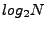
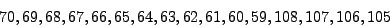
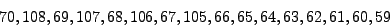
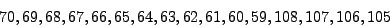
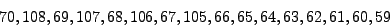

Next: Chord Output Properties
Up: Chord System Properties
Previous: Chord Debug Properties
This section describes properties regarding execution of instrumented programs for dynamic analyses.
- chord.reuse.trace
Type: bool
Description: Reuse the dynamic trace file specified by property chord.final.trace.file (computed by a previous run of Chord) if it exists.
Default value: false
Note: Property chord.trace.pipe must be set to false if this property is set to true.
- chord.trace.pipe
Type: bool
Description: Implement the dynamic trace file as a POSIX pipe instead of a regular file.
Default value: true
Note: Property chord.reuse.trace must be set to false if this property is set to true.
- chord.trace.block.size
Type: int
Description: Number of bytes to read/write in a single operation from/to the dynamic trace file.
Default value: 4096
- chord.runtime.class
Type: class
Description: Subclass of chord.project.Runtime used by dynamic program analyses to handle events generated during an instrumented program's execution.
Default value: chord.project.BufferedRuntime
- chord.max.constr
Type: int
Description: Maximum number of bytes over which events generated during the execution of any constructor in the given program may span.
Default value: 50000000
Note: This property is relevant only for dynamic analyses which want events of the form NEW  to be generated (see Section ![[*]](crossref.png) ). The problem with generating such events at run-time is that the ID o of the object freshly created by thread t at object allocation site h cannot be instrumented until the object is fully initialized (i.e., its constructor has finished executing). Hence, Chord first generates a ``crude dynamic trace", which has events of the form BEF_NEW and AFT_NEW generated before and after the execution of the constructor, respectively. A subsequent pass generates a ``final dynamic trace", which replaces the BEF_NEW events by NEW and discards the AFT_NEW events. For this purpose, however, Chord must buffer all events generated between the BEF_NEW and AFT_NEW events, and this property specifies the number of bytes over which these events may span. If the actual number of bytes exceeds the value specified by this property (e.g., if the constructor throws an exception and the AFT_NEW event is not generated at all), then Chord simply generates event NEW   (i.e., it treats the created object as having ID 0, which is the ID also used for null).
). The problem with generating such events at run-time is that the ID o of the object freshly created by thread t at object allocation site h cannot be instrumented until the object is fully initialized (i.e., its constructor has finished executing). Hence, Chord first generates a ``crude dynamic trace", which has events of the form BEF_NEW and AFT_NEW generated before and after the execution of the constructor, respectively. A subsequent pass generates a ``final dynamic trace", which replaces the BEF_NEW events by NEW and discards the AFT_NEW events. For this purpose, however, Chord must buffer all events generated between the BEF_NEW and AFT_NEW events, and this property specifies the number of bytes over which these events may span. If the actual number of bytes exceeds the value specified by this property (e.g., if the constructor throws an exception and the AFT_NEW event is not generated at all), then Chord simply generates event NEW   (i.e., it treats the created object as having ID 0, which is the ID also used for null).
Next: Chord Output Properties
Up: Chord System Properties
Previous: Chord Debug Properties
Mayur Naik
2010-07-22